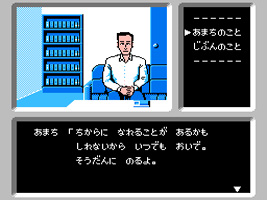
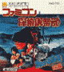
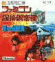

Famicom Tantei Club: Kieta Koukeisha
Information | Alt. Versions | Trivia | Boxart
|  |
System: Famicom Disk System Releases: Related Pages: |
Game © 1988 Nintendo
Information
The first game in the Tantei Club series. This series of text adventures sees you playing as a schoolboy who starts a detective club to uncover a murder mystery that took place near his home.
You move from place to place, examining things and interrogating people, so you can put together the clues and solve the mystery. The action is directed by a command menu, and illustrated by an image. As you progress, you may find out more information from people you have already spoken to.
Alternate Versions
- Re-released as part of the Famicom Mini collection as Famicom Tantei Club: Kieta Koukeisha (GBA 2004).
Trivia
- Japanese Title Translation:Famicom Detective Club: The Missing Heir
Boxart
|  Japanese Boxart Disk 1 |
 Japanese Boxart Disk 2 |